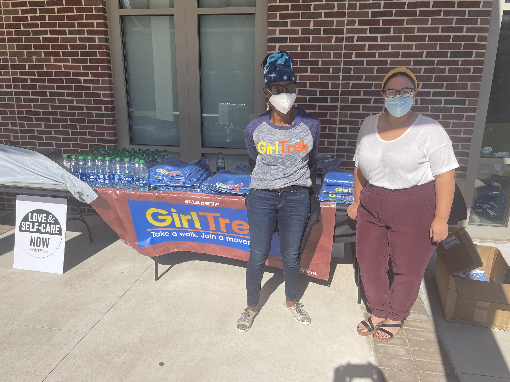
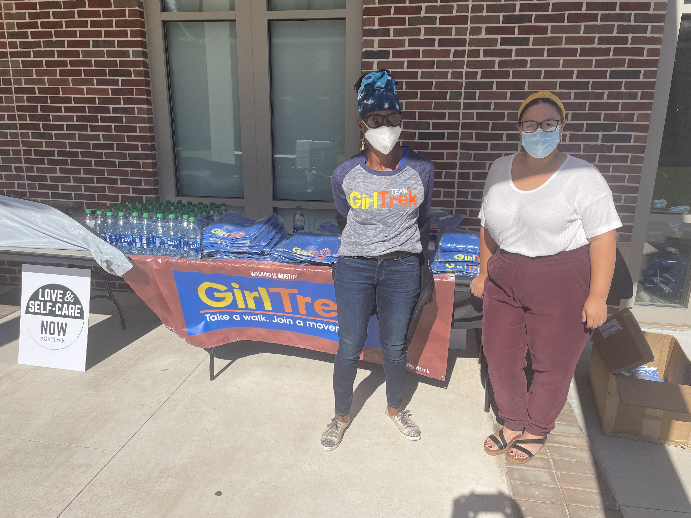

Pilot Project
Launching the first national college chapter of GirlTrek as a pilot at Rutgers University. Organizing regular walks of black female students and faculty. Bringing graduate students, who are often isolated, into the walking community. Organizing anti-racist trainings for all faculty and students of Rutgers through special GirlTrek led walks.
Collaborators
GirlTrek, Takeya Meggett (Special Impact Coach; predecessor: Onika Jervis) • Chasity Davis and Debe Davis (GirlTrek New Jersey) • Douglass Residential College—Corina Hernandez • DICE—Joan Collier with AIR Collaborative (Anette Freytag and Julia M. Ritter)
Support
Douglass Residential College • Division of Diversity, Inclusion and Community Engagement (DICE) • Institute of the Study of Global Racial Justice (ISGRJ) • Rutgers Honors Program
Desired Impact:
Empowering the black women of the Rutgers and local community. Enhancing the health of black women and girls. Beginning research collaborations with GirlTrek within the "Black Bodies-Black Health" Initiative of the Institute for Global Racial Justice, based at Rutgers. Joining existing anti-racist training walks, organized by GirlTrek.
 


Photography: John Evans, Anette Freytag